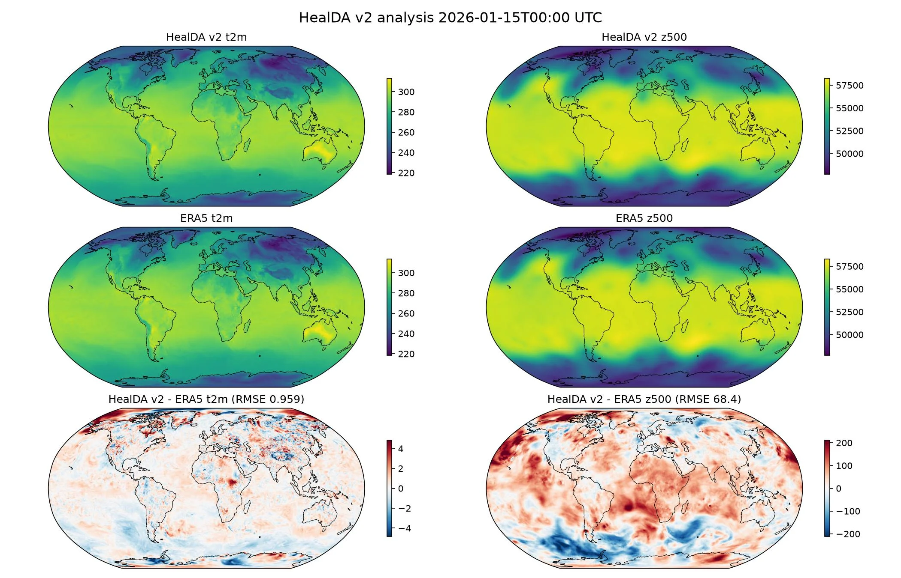

HealDA v2 Global Data Assimilation¶
Producing a 0.25 degree global analysis from the NNJA observing system.
This example runs the HealDA v2 data assimilation model on NNJA observations. The model is observation-only: it reads an eight-frame, six-hourly window ending at the analysis time and every observation within three hours of each frame, and returns the analysis of the last frame on the 721 x 1440 equiangular grid.
In this example you will learn:
- How to load the HealDA v2 model with the
healdapackage as its backend - Fetching NNJA conventional, satellite-wind and radiance DataFrames over the model's 48 hour window
- Running the model and comparing the analysis against ERA5
Set Up¶
This example requires the following components:
- Assimilation Model: HealDA v2
earth2studio.models.da.HealDAv2. - Datasource (PrepBUFR and GPS-RO): NNJA conventional observations
earth2studio.data.NNJAObsConv. - Datasource (winds): NNJA satellite winds
earth2studio.data.NNJAObsSatwnd. - Datasource (radiances): NNJA satellite radiances
earth2studio.data.NNJAObsSat.
Observation downloads are about 2.25 GiB by default or 21.3 GiB with radiances. Raw files are cached for reuse. Omitting radiances can reduce analysis quality.
import os
os.makedirs("outputs", exist_ok=True)
from dotenv import load_dotenv
load_dotenv()
from datetime import timedelta
import numpy as np
from loguru import logger
from tqdm import tqdm
logger.remove()
logger.add(lambda msg: tqdm.write(msg, end=""), colorize=True)
from earth2studio.data import (
NCAR_ERA5,
NNJAObsConv,
NNJAObsSat,
NNJAObsSatwnd,
fetch_dataframes,
)
from earth2studio.models.da import HealDAv2
# The network runs on a CUDA device only; building the 0.25 degree recipe fetches the
# ERA5 static fields into the healda cache the first time.
package = HealDAv2.load_default_package()
model = HealDAv2.load_model(package).to("cuda:0")
Console output235 lines
Downloading healda_v2.checkpoint: 0%| | 0.00/3.42G [00:00<?, ?B/s]
Downloading healda_v2.checkpoint: 0%| | 10.0M/3.42G [00:01<07:23, 8.25MB/s]
Downloading healda_v2.checkpoint: 1%| | 20.0M/3.42G [00:01<03:27, 17.6MB/s]
Downloading healda_v2.checkpoint: 1%| | 40.0M/3.42G [00:01<01:36, 37.7MB/s]
Downloading healda_v2.checkpoint: 2%|▏ | 60.0M/3.42G [00:01<01:12, 49.9MB/s]
Downloading healda_v2.checkpoint: 2%|▏ | 70.0M/3.42G [00:02<01:13, 49.0MB/s]
Downloading healda_v2.checkpoint: 2%|▏ | 80.0M/3.42G [00:02<01:03, 56.7MB/s]
Downloading healda_v2.checkpoint: 3%|▎ | 100M/3.42G [00:02<00:49, 72.0MB/s]
Downloading healda_v2.checkpoint: 3%|▎ | 120M/3.42G [00:02<00:42, 84.2MB/s]
Downloading healda_v2.checkpoint: 4%|▍ | 140M/3.42G [00:02<00:37, 93.7MB/s]
Downloading healda_v2.checkpoint: 5%|▍ | 160M/3.42G [00:02<00:37, 94.5MB/s]
Downloading healda_v2.checkpoint: 5%|▌ | 180M/3.42G [00:03<00:33, 105MB/s]
Downloading healda_v2.checkpoint: 6%|▌ | 200M/3.42G [00:03<00:31, 110MB/s]
Downloading healda_v2.checkpoint: 6%|▋ | 220M/3.42G [00:03<00:31, 109MB/s]
Downloading healda_v2.checkpoint: 7%|▋ | 240M/3.42G [00:03<00:29, 116MB/s]
Downloading healda_v2.checkpoint: 7%|▋ | 260M/3.42G [00:03<00:28, 120MB/s]
Downloading healda_v2.checkpoint: 8%|▊ | 280M/3.42G [00:03<00:28, 118MB/s]
Downloading healda_v2.checkpoint: 9%|▊ | 300M/3.42G [00:04<00:29, 113MB/s]
Downloading healda_v2.checkpoint: 9%|▉ | 320M/3.42G [00:04<00:29, 115MB/s]
Downloading healda_v2.checkpoint: 10%|▉ | 340M/3.42G [00:04<00:28, 117MB/s]
Downloading healda_v2.checkpoint: 10%|█ | 360M/3.42G [00:04<00:27, 122MB/s]
Downloading healda_v2.checkpoint: 11%|█ | 380M/3.42G [00:04<00:26, 122MB/s]
Downloading healda_v2.checkpoint: 11%|█▏ | 400M/3.42G [00:05<00:27, 119MB/s]
Downloading healda_v2.checkpoint: 12%|█▏ | 420M/3.42G [00:05<00:38, 83.4MB/s]
Downloading healda_v2.checkpoint: 13%|█▎ | 440M/3.42G [00:05<00:39, 80.7MB/s]
Downloading healda_v2.checkpoint: 13%|█▎ | 450M/3.42G [00:06<00:52, 61.2MB/s]
Downloading healda_v2.checkpoint: 13%|█▎ | 460M/3.42G [00:06<00:48, 65.5MB/s]
Downloading healda_v2.checkpoint: 14%|█▎ | 480M/3.42G [00:06<00:40, 78.0MB/s]
Downloading healda_v2.checkpoint: 14%|█▍ | 500M/3.42G [00:06<00:36, 87.3MB/s]
Downloading healda_v2.checkpoint: 15%|█▍ | 510M/3.42G [00:06<00:36, 86.6MB/s]
Downloading healda_v2.checkpoint: 15%|█▍ | 520M/3.42G [00:06<00:36, 85.4MB/s]
Downloading healda_v2.checkpoint: 15%|█▌ | 540M/3.42G [00:06<00:31, 97.3MB/s]
Downloading healda_v2.checkpoint: 16%|█▌ | 560M/3.42G [00:07<00:28, 109MB/s]
Downloading healda_v2.checkpoint: 17%|█▋ | 580M/3.42G [00:07<00:28, 109MB/s]
Downloading healda_v2.checkpoint: 17%|█▋ | 600M/3.42G [00:07<00:26, 114MB/s]
Downloading healda_v2.checkpoint: 18%|█▊ | 620M/3.42G [00:07<00:26, 116MB/s]
Downloading healda_v2.checkpoint: 18%|█▊ | 640M/3.42G [00:07<00:26, 114MB/s]
Downloading healda_v2.checkpoint: 19%|█▉ | 660M/3.42G [00:08<00:26, 115MB/s]
Downloading healda_v2.checkpoint: 19%|█▉ | 680M/3.42G [00:08<00:24, 119MB/s]
Downloading healda_v2.checkpoint: 20%|██ | 700M/3.42G [00:08<00:25, 117MB/s]
Downloading healda_v2.checkpoint: 21%|██ | 720M/3.42G [00:08<00:27, 107MB/s]
Downloading healda_v2.checkpoint: 21%|██ | 740M/3.42G [00:09<00:36, 79.8MB/s]
Downloading healda_v2.checkpoint: 21%|██▏ | 750M/3.42G [00:09<00:39, 73.8MB/s]
Downloading healda_v2.checkpoint: 22%|██▏ | 760M/3.42G [00:09<00:36, 77.8MB/s]
Downloading healda_v2.checkpoint: 22%|██▏ | 770M/3.42G [00:09<00:41, 69.3MB/s]
Downloading healda_v2.checkpoint: 22%|██▏ | 780M/3.42G [00:09<00:42, 66.6MB/s]
Downloading healda_v2.checkpoint: 23%|██▎ | 790M/3.42G [00:09<00:48, 58.2MB/s]
Downloading healda_v2.checkpoint: 23%|██▎ | 800M/3.42G [00:10<00:47, 60.2MB/s]
Downloading healda_v2.checkpoint: 23%|██▎ | 810M/3.42G [00:10<00:52, 53.5MB/s]
Downloading healda_v2.checkpoint: 23%|██▎ | 820M/3.42G [00:10<01:00, 46.3MB/s]
Downloading healda_v2.checkpoint: 24%|██▎ | 830M/3.42G [00:11<01:09, 40.0MB/s]
Downloading healda_v2.checkpoint: 24%|██▍ | 840M/3.42G [00:11<01:07, 41.2MB/s]
Downloading healda_v2.checkpoint: 24%|██▍ | 850M/3.42G [00:11<01:09, 39.8MB/s]
Downloading healda_v2.checkpoint: 25%|██▍ | 860M/3.42G [00:11<01:13, 37.6MB/s]
Downloading healda_v2.checkpoint: 25%|██▍ | 870M/3.42G [00:12<01:19, 34.9MB/s]
Downloading healda_v2.checkpoint: 25%|██▌ | 880M/3.42G [00:12<01:06, 41.4MB/s]
Downloading healda_v2.checkpoint: 25%|██▌ | 890M/3.42G [00:12<00:59, 45.7MB/s]
Downloading healda_v2.checkpoint: 26%|██▌ | 900M/3.42G [00:12<00:51, 53.0MB/s]
Downloading healda_v2.checkpoint: 26%|██▌ | 910M/3.42G [00:12<00:47, 57.0MB/s]
Downloading healda_v2.checkpoint: 26%|██▋ | 920M/3.42G [00:12<00:41, 65.7MB/s]
Downloading healda_v2.checkpoint: 27%|██▋ | 930M/3.42G [00:13<00:37, 72.2MB/s]
Downloading healda_v2.checkpoint: 27%|██▋ | 940M/3.42G [00:13<00:35, 76.2MB/s]
Downloading healda_v2.checkpoint: 27%|██▋ | 960M/3.42G [00:13<00:32, 82.8MB/s]
Downloading healda_v2.checkpoint: 28%|██▊ | 970M/3.42G [00:13<00:31, 85.5MB/s]
Downloading healda_v2.checkpoint: 28%|██▊ | 990M/3.42G [00:13<00:27, 94.3MB/s]
Downloading healda_v2.checkpoint: 29%|██▉ | 0.99G/3.42G [00:13<00:25, 101MB/s]
Downloading healda_v2.checkpoint: 29%|██▉ | 1.01G/3.42G [00:14<00:23, 109MB/s]
Downloading healda_v2.checkpoint: 30%|███ | 1.03G/3.42G [00:14<00:22, 115MB/s]
Downloading healda_v2.checkpoint: 31%|███ | 1.04G/3.42G [00:14<00:22, 114MB/s]
Downloading healda_v2.checkpoint: 31%|███ | 1.06G/3.42G [00:14<00:23, 109MB/s]
Downloading healda_v2.checkpoint: 32%|███▏ | 1.08G/3.42G [00:14<00:22, 109MB/s]
Downloading healda_v2.checkpoint: 32%|███▏ | 1.10G/3.42G [00:15<00:23, 104MB/s]
Downloading healda_v2.checkpoint: 33%|███▎ | 1.12G/3.42G [00:15<00:22, 112MB/s]
Downloading healda_v2.checkpoint: 33%|███▎ | 1.14G/3.42G [00:15<00:30, 80.6MB/s]
Downloading healda_v2.checkpoint: 34%|███▍ | 1.16G/3.42G [00:15<00:26, 89.9MB/s]
Downloading healda_v2.checkpoint: 34%|███▍ | 1.17G/3.42G [00:15<00:26, 91.8MB/s]
Downloading healda_v2.checkpoint: 35%|███▍ | 1.19G/3.42G [00:16<00:24, 97.8MB/s]
Downloading healda_v2.checkpoint: 35%|███▌ | 1.21G/3.42G [00:16<00:24, 97.8MB/s]
Downloading healda_v2.checkpoint: 36%|███▌ | 1.23G/3.42G [00:16<00:23, 101MB/s]
Downloading healda_v2.checkpoint: 37%|███▋ | 1.25G/3.42G [00:16<00:21, 107MB/s]
Downloading healda_v2.checkpoint: 37%|███▋ | 1.27G/3.42G [00:16<00:21, 108MB/s]
Downloading healda_v2.checkpoint: 38%|███▊ | 1.29G/3.42G [00:17<00:22, 104MB/s]
Downloading healda_v2.checkpoint: 38%|███▊ | 1.31G/3.42G [00:17<00:21, 105MB/s]
Downloading healda_v2.checkpoint: 39%|███▉ | 1.33G/3.42G [00:17<00:25, 86.8MB/s]
Downloading healda_v2.checkpoint: 39%|███▉ | 1.35G/3.42G [00:17<00:24, 90.3MB/s]
Downloading healda_v2.checkpoint: 40%|████ | 1.37G/3.42G [00:17<00:23, 94.8MB/s]
Downloading healda_v2.checkpoint: 41%|████ | 1.39G/3.42G [00:18<00:21, 99.9MB/s]
Downloading healda_v2.checkpoint: 41%|████ | 1.41G/3.42G [00:18<00:21, 102MB/s]
Downloading healda_v2.checkpoint: 42%|████▏ | 1.43G/3.42G [00:18<00:20, 102MB/s]
Downloading healda_v2.checkpoint: 42%|████▏ | 1.45G/3.42G [00:18<00:20, 103MB/s]
Downloading healda_v2.checkpoint: 43%|████▎ | 1.46G/3.42G [00:18<00:20, 105MB/s]
Downloading healda_v2.checkpoint: 43%|████▎ | 1.48G/3.42G [00:19<00:19, 108MB/s]
Downloading healda_v2.checkpoint: 44%|████▍ | 1.50G/3.42G [00:19<00:19, 105MB/s]
Downloading healda_v2.checkpoint: 45%|████▍ | 1.52G/3.42G [00:19<00:19, 105MB/s]
Downloading healda_v2.checkpoint: 45%|████▌ | 1.54G/3.42G [00:19<00:19, 105MB/s]
Downloading healda_v2.checkpoint: 46%|████▌ | 1.56G/3.42G [00:19<00:18, 109MB/s]
Downloading healda_v2.checkpoint: 46%|████▋ | 1.58G/3.42G [00:20<00:18, 108MB/s]
Downloading healda_v2.checkpoint: 47%|████▋ | 1.60G/3.42G [00:20<00:17, 109MB/s]
Downloading healda_v2.checkpoint: 47%|████▋ | 1.62G/3.42G [00:20<00:18, 106MB/s]
Downloading healda_v2.checkpoint: 48%|████▊ | 1.64G/3.42G [00:20<00:18, 105MB/s]
Downloading healda_v2.checkpoint: 49%|████▊ | 1.66G/3.42G [00:20<00:17, 109MB/s]
Downloading healda_v2.checkpoint: 49%|████▉ | 1.68G/3.42G [00:21<00:16, 114MB/s]
Downloading healda_v2.checkpoint: 50%|████▉ | 1.70G/3.42G [00:21<00:16, 115MB/s]
Downloading healda_v2.checkpoint: 50%|█████ | 1.72G/3.42G [00:21<00:17, 104MB/s]
Downloading healda_v2.checkpoint: 51%|█████ | 1.74G/3.42G [00:21<00:17, 104MB/s]
Downloading healda_v2.checkpoint: 51%|█████▏ | 1.76G/3.42G [00:21<00:16, 109MB/s]
Downloading healda_v2.checkpoint: 52%|█████▏ | 1.78G/3.42G [00:22<00:16, 108MB/s]
Downloading healda_v2.checkpoint: 53%|█████▎ | 1.80G/3.42G [00:22<00:16, 107MB/s]
Downloading healda_v2.checkpoint: 53%|█████▎ | 1.82G/3.42G [00:22<00:15, 109MB/s]
Downloading healda_v2.checkpoint: 54%|█████▎ | 1.84G/3.42G [00:22<00:15, 112MB/s]
Downloading healda_v2.checkpoint: 54%|█████▍ | 1.86G/3.42G [00:22<00:14, 113MB/s]
Downloading healda_v2.checkpoint: 55%|█████▍ | 1.88G/3.42G [00:22<00:14, 113MB/s]
Downloading healda_v2.checkpoint: 55%|█████▌ | 1.89G/3.42G [00:23<00:14, 114MB/s]
Downloading healda_v2.checkpoint: 56%|█████▌ | 1.91G/3.42G [00:23<00:15, 102MB/s]
Downloading healda_v2.checkpoint: 56%|█████▋ | 1.92G/3.42G [00:23<00:15, 102MB/s]
Downloading healda_v2.checkpoint: 57%|█████▋ | 1.93G/3.42G [00:23<00:15, 101MB/s]
Downloading healda_v2.checkpoint: 57%|█████▋ | 1.94G/3.42G [00:23<00:16, 97.2MB/s]
Downloading healda_v2.checkpoint: 57%|█████▋ | 1.95G/3.42G [00:24<00:25, 62.8MB/s]
Downloading healda_v2.checkpoint: 57%|█████▋ | 1.96G/3.42G [00:24<00:28, 55.1MB/s]
Downloading healda_v2.checkpoint: 58%|█████▊ | 1.97G/3.42G [00:24<00:33, 46.6MB/s]
Downloading healda_v2.checkpoint: 58%|█████▊ | 1.98G/3.42G [00:25<00:37, 40.6MB/s]
Downloading healda_v2.checkpoint: 58%|█████▊ | 1.99G/3.42G [00:25<00:42, 36.2MB/s]
Downloading healda_v2.checkpoint: 59%|█████▊ | 2.00G/3.42G [00:25<00:50, 30.3MB/s]
Downloading healda_v2.checkpoint: 59%|█████▉ | 2.01G/3.42G [00:26<00:47, 31.8MB/s]
Downloading healda_v2.checkpoint: 59%|█████▉ | 2.02G/3.42G [00:26<00:49, 30.2MB/s]
Downloading healda_v2.checkpoint: 59%|█████▉ | 2.03G/3.42G [00:26<00:50, 29.2MB/s]
Downloading healda_v2.checkpoint: 60%|█████▉ | 2.04G/3.42G [00:27<00:50, 29.2MB/s]
Downloading healda_v2.checkpoint: 60%|██████ | 2.05G/3.42G [00:27<00:51, 28.3MB/s]
Downloading healda_v2.checkpoint: 60%|██████ | 2.06G/3.42G [00:28<00:49, 29.2MB/s]
Downloading healda_v2.checkpoint: 61%|██████ | 2.07G/3.42G [00:28<00:48, 29.9MB/s]
Downloading healda_v2.checkpoint: 61%|██████ | 2.08G/3.42G [00:28<00:42, 33.5MB/s]
Downloading healda_v2.checkpoint: 61%|██████ | 2.09G/3.42G [00:28<00:42, 33.3MB/s]
Downloading healda_v2.checkpoint: 61%|██████▏ | 2.10G/3.42G [00:29<00:38, 36.3MB/s]
Downloading healda_v2.checkpoint: 62%|██████▏ | 2.11G/3.42G [00:29<00:36, 38.6MB/s]
Downloading healda_v2.checkpoint: 62%|██████▏ | 2.12G/3.42G [00:29<00:38, 36.3MB/s]
Downloading healda_v2.checkpoint: 62%|██████▏ | 2.13G/3.42G [00:29<00:35, 39.1MB/s]
Downloading healda_v2.checkpoint: 63%|██████▎ | 2.14G/3.42G [00:30<00:34, 39.8MB/s]
Downloading healda_v2.checkpoint: 63%|██████▎ | 2.15G/3.42G [00:30<00:35, 38.9MB/s]
Downloading healda_v2.checkpoint: 63%|██████▎ | 2.16G/3.42G [00:30<00:33, 40.8MB/s]
Downloading healda_v2.checkpoint: 63%|██████▎ | 2.17G/3.42G [00:30<00:29, 45.8MB/s]
Downloading healda_v2.checkpoint: 64%|██████▎ | 2.18G/3.42G [00:31<00:28, 46.9MB/s]
Downloading healda_v2.checkpoint: 64%|██████▍ | 2.19G/3.42G [00:31<00:27, 48.8MB/s]
Downloading healda_v2.checkpoint: 64%|██████▍ | 2.20G/3.42G [00:31<00:26, 50.2MB/s]
Downloading healda_v2.checkpoint: 65%|██████▍ | 2.21G/3.42G [00:31<00:22, 58.0MB/s]
Downloading healda_v2.checkpoint: 65%|██████▍ | 2.22G/3.42G [00:31<00:19, 66.1MB/s]
Downloading healda_v2.checkpoint: 65%|██████▌ | 2.23G/3.42G [00:31<00:19, 65.0MB/s]
Downloading healda_v2.checkpoint: 65%|██████▌ | 2.24G/3.42G [00:31<00:17, 71.5MB/s]
Downloading healda_v2.checkpoint: 66%|██████▌ | 2.25G/3.42G [00:32<00:16, 78.3MB/s]
Downloading healda_v2.checkpoint: 66%|██████▌ | 2.26G/3.42G [00:32<00:14, 83.7MB/s]
Downloading healda_v2.checkpoint: 66%|██████▋ | 2.27G/3.42G [00:32<00:14, 88.2MB/s]
Downloading healda_v2.checkpoint: 67%|██████▋ | 2.28G/3.42G [00:32<00:13, 91.1MB/s]
Downloading healda_v2.checkpoint: 67%|██████▋ | 2.29G/3.42G [00:32<00:14, 85.2MB/s]
Downloading healda_v2.checkpoint: 67%|██████▋ | 2.30G/3.42G [00:32<00:13, 85.9MB/s]
Downloading healda_v2.checkpoint: 68%|██████▊ | 2.31G/3.42G [00:32<00:13, 88.8MB/s]
Downloading healda_v2.checkpoint: 68%|██████▊ | 2.32G/3.42G [00:32<00:12, 91.3MB/s]
Downloading healda_v2.checkpoint: 69%|██████▊ | 2.34G/3.42G [00:33<00:11, 103MB/s]
Downloading healda_v2.checkpoint: 69%|██████▉ | 2.36G/3.42G [00:33<00:10, 107MB/s]
Downloading healda_v2.checkpoint: 70%|██████▉ | 2.38G/3.42G [00:33<00:11, 98.7MB/s]
Downloading healda_v2.checkpoint: 70%|███████ | 2.39G/3.42G [00:33<00:11, 92.5MB/s]
Downloading healda_v2.checkpoint: 70%|███████ | 2.40G/3.42G [00:33<00:12, 89.8MB/s]
Downloading healda_v2.checkpoint: 71%|███████ | 2.41G/3.42G [00:33<00:11, 90.2MB/s]
Downloading healda_v2.checkpoint: 71%|███████ | 2.42G/3.42G [00:34<00:11, 91.8MB/s]
Downloading healda_v2.checkpoint: 71%|███████ | 2.43G/3.42G [00:34<00:11, 92.4MB/s]
Downloading healda_v2.checkpoint: 71%|███████▏ | 2.44G/3.42G [00:34<00:11, 93.2MB/s]
Downloading healda_v2.checkpoint: 72%|███████▏ | 2.45G/3.42G [00:34<00:13, 78.6MB/s]
Downloading healda_v2.checkpoint: 72%|███████▏ | 2.47G/3.42G [00:34<00:14, 69.2MB/s]
Downloading healda_v2.checkpoint: 73%|███████▎ | 2.48G/3.42G [00:34<00:14, 69.8MB/s]
Downloading healda_v2.checkpoint: 73%|███████▎ | 2.49G/3.42G [00:35<00:17, 55.7MB/s]
Downloading healda_v2.checkpoint: 73%|███████▎ | 2.50G/3.42G [00:35<00:17, 57.8MB/s]
Downloading healda_v2.checkpoint: 73%|███████▎ | 2.51G/3.42G [00:35<00:15, 63.1MB/s]
Downloading healda_v2.checkpoint: 74%|███████▎ | 2.52G/3.42G [00:35<00:14, 66.7MB/s]
Downloading healda_v2.checkpoint: 74%|███████▍ | 2.54G/3.42G [00:35<00:11, 81.7MB/s]
Downloading healda_v2.checkpoint: 75%|███████▍ | 2.56G/3.42G [00:36<00:09, 92.3MB/s]
Downloading healda_v2.checkpoint: 75%|███████▌ | 2.58G/3.42G [00:36<00:13, 68.9MB/s]
Downloading healda_v2.checkpoint: 76%|███████▌ | 2.60G/3.42G [00:36<00:10, 81.3MB/s]
Downloading healda_v2.checkpoint: 76%|███████▋ | 2.61G/3.42G [00:36<00:10, 82.6MB/s]
Downloading healda_v2.checkpoint: 77%|███████▋ | 2.63G/3.42G [00:36<00:09, 90.0MB/s]
Downloading healda_v2.checkpoint: 77%|███████▋ | 2.64G/3.42G [00:37<00:09, 91.0MB/s]
Downloading healda_v2.checkpoint: 78%|███████▊ | 2.66G/3.42G [00:37<00:08, 101MB/s]
Downloading healda_v2.checkpoint: 78%|███████▊ | 2.68G/3.42G [00:37<00:07, 101MB/s]
Downloading healda_v2.checkpoint: 79%|███████▊ | 2.69G/3.42G [00:37<00:08, 97.4MB/s]
Downloading healda_v2.checkpoint: 79%|███████▉ | 2.71G/3.42G [00:37<00:07, 97.3MB/s]
Downloading healda_v2.checkpoint: 80%|███████▉ | 2.72G/3.42G [00:37<00:07, 99.1MB/s]
Downloading healda_v2.checkpoint: 80%|████████ | 2.74G/3.42G [00:38<00:06, 104MB/s]
Downloading healda_v2.checkpoint: 81%|████████ | 2.76G/3.42G [00:38<00:06, 104MB/s]
Downloading healda_v2.checkpoint: 81%|████████▏ | 2.78G/3.42G [00:38<00:06, 105MB/s]
Downloading healda_v2.checkpoint: 82%|████████▏ | 2.80G/3.42G [00:38<00:06, 104MB/s]
Downloading healda_v2.checkpoint: 83%|████████▎ | 2.82G/3.42G [00:38<00:06, 105MB/s]
Downloading healda_v2.checkpoint: 83%|████████▎ | 2.84G/3.42G [00:39<00:05, 111MB/s]
Downloading healda_v2.checkpoint: 84%|████████▎ | 2.86G/3.42G [00:39<00:05, 104MB/s]
Downloading healda_v2.checkpoint: 84%|████████▍ | 2.88G/3.42G [00:39<00:06, 86.0MB/s]
Downloading healda_v2.checkpoint: 85%|████████▍ | 2.89G/3.42G [00:39<00:06, 81.1MB/s]
Downloading healda_v2.checkpoint: 85%|████████▍ | 2.90G/3.42G [00:40<00:07, 76.8MB/s]
Downloading healda_v2.checkpoint: 85%|████████▌ | 2.91G/3.42G [00:40<00:07, 76.5MB/s]
Downloading healda_v2.checkpoint: 86%|████████▌ | 2.93G/3.42G [00:40<00:06, 86.7MB/s]
Downloading healda_v2.checkpoint: 86%|████████▌ | 2.94G/3.42G [00:40<00:05, 88.5MB/s]
Downloading healda_v2.checkpoint: 87%|████████▋ | 2.96G/3.42G [00:40<00:05, 93.7MB/s]
Downloading healda_v2.checkpoint: 87%|████████▋ | 2.97G/3.42G [00:40<00:05, 90.2MB/s]
Downloading healda_v2.checkpoint: 87%|████████▋ | 2.99G/3.42G [00:41<00:04, 96.7MB/s]
Downloading healda_v2.checkpoint: 88%|████████▊ | 3.00G/3.42G [00:41<00:05, 88.4MB/s]
Downloading healda_v2.checkpoint: 88%|████████▊ | 3.02G/3.42G [00:41<00:04, 95.6MB/s]
Downloading healda_v2.checkpoint: 89%|████████▊ | 3.03G/3.42G [00:41<00:04, 93.1MB/s]
Downloading healda_v2.checkpoint: 89%|████████▉ | 3.04G/3.42G [00:41<00:04, 85.5MB/s]
Downloading healda_v2.checkpoint: 89%|████████▉ | 3.05G/3.42G [00:41<00:04, 86.9MB/s]
Downloading healda_v2.checkpoint: 90%|████████▉ | 3.07G/3.42G [00:41<00:03, 94.6MB/s]
Downloading healda_v2.checkpoint: 90%|█████████ | 3.09G/3.42G [00:42<00:03, 106MB/s]
Downloading healda_v2.checkpoint: 91%|█████████ | 3.11G/3.42G [00:42<00:03, 99.1MB/s]
Downloading healda_v2.checkpoint: 91%|█████████ | 3.12G/3.42G [00:42<00:03, 96.1MB/s]
Downloading healda_v2.checkpoint: 91%|█████████▏| 3.12G/3.42G [00:42<00:03, 80.9MB/s]
Downloading healda_v2.checkpoint: 92%|█████████▏| 3.13G/3.42G [00:42<00:04, 72.5MB/s]
Downloading healda_v2.checkpoint: 92%|█████████▏| 3.14G/3.42G [00:43<00:04, 68.7MB/s]
Downloading healda_v2.checkpoint: 92%|█████████▏| 3.15G/3.42G [00:43<00:03, 73.8MB/s]
Downloading healda_v2.checkpoint: 93%|█████████▎| 3.16G/3.42G [00:43<00:03, 68.3MB/s]
Downloading healda_v2.checkpoint: 93%|█████████▎| 3.18G/3.42G [00:43<00:03, 79.8MB/s]
Downloading healda_v2.checkpoint: 94%|█████████▎| 3.20G/3.42G [00:43<00:02, 87.8MB/s]
Downloading healda_v2.checkpoint: 94%|█████████▍| 3.21G/3.42G [00:43<00:02, 87.9MB/s]
Downloading healda_v2.checkpoint: 94%|█████████▍| 3.22G/3.42G [00:44<00:02, 80.3MB/s]
Downloading healda_v2.checkpoint: 95%|█████████▍| 3.23G/3.42G [00:44<00:02, 78.1MB/s]
Downloading healda_v2.checkpoint: 95%|█████████▍| 3.24G/3.42G [00:44<00:02, 82.9MB/s]
Downloading healda_v2.checkpoint: 95%|█████████▌| 3.25G/3.42G [00:44<00:02, 87.0MB/s]
Downloading healda_v2.checkpoint: 95%|█████████▌| 3.26G/3.42G [00:44<00:02, 78.8MB/s]
Downloading healda_v2.checkpoint: 96%|█████████▌| 3.28G/3.42G [00:44<00:01, 84.8MB/s]
Downloading healda_v2.checkpoint: 96%|█████████▋| 3.29G/3.42G [00:44<00:01, 72.7MB/s]
Downloading healda_v2.checkpoint: 97%|█████████▋| 3.30G/3.42G [00:45<00:01, 67.2MB/s]
Downloading healda_v2.checkpoint: 97%|█████████▋| 3.31G/3.42G [00:45<00:01, 64.1MB/s]
Downloading healda_v2.checkpoint: 97%|█████████▋| 3.32G/3.42G [00:45<00:01, 69.7MB/s]
Downloading healda_v2.checkpoint: 97%|█████████▋| 3.33G/3.42G [00:45<00:01, 70.1MB/s]
Downloading healda_v2.checkpoint: 98%|█████████▊| 3.35G/3.42G [00:45<00:00, 81.8MB/s]
Downloading healda_v2.checkpoint: 98%|█████████▊| 3.36G/3.42G [00:45<00:00, 78.4MB/s]
Downloading healda_v2.checkpoint: 99%|█████████▊| 3.37G/3.42G [00:46<00:00, 80.6MB/s]
Downloading healda_v2.checkpoint: 99%|█████████▉| 3.39G/3.42G [00:46<00:00, 78.5MB/s]
Downloading healda_v2.checkpoint: 99%|█████████▉| 3.40G/3.42G [00:46<00:00, 74.2MB/s]
Downloading healda_v2.checkpoint: 100%|██████████| 3.42G/3.42G [00:46<00:00, 86.2MB/s]
Downloading healda_v2.checkpoint: 100%|██████████| 3.42G/3.42G [00:46<00:00, 78.6MB/s]
2026-10-29 17:35:04.312 | INFO | earth2studio.models.da.healda_v2:load_model:290 - Building HealDA v2 from healda_v2.checkpointFetch Observations¶
One analysis reads observations spanning [t - 45h, t + 3h]. Any source returning
DataFrames that match HealDAv2.input_coords works; here the NNJA sources are
configured as in training, in the wide layout the model reads (one row per report
level, wind or footprint): each PrepBUFR observation's original event, satellite
winds from NNJAObsSatwnd only, and only the IR sounder channels the model reads.
A wide request returns one stream (PrepBUFR, GPS-RO, satellite winds or one satellite
sensor), and input_coords gives one schema per model argument, in the order
(prepbufr, gpsro, satwnd, *sensors). fetch_dataframes fetches every stream
concurrently, in that order, and attaches the request_time metadata the model
requires. A sensor outside its archive period comes back empty with a warning.
analysis_time = np.array([np.datetime64("2026-01-15T00:00")])
tolerance = (timedelta(hours=-45), timedelta(hours=3))
include_satellite_radiances = False # Enable satellite observations for best accuracy
conv_source = NNJAObsConv(
time_tolerance=tolerance,
original_event=True,
exclude_message_types=("SATWND",),
layout="wide",
async_timeout=600,
)
satwnd_source = NNJAObsSatwnd(
time_tolerance=tolerance, layout="wide", async_timeout=600
)
schemas = model.input_coords() # (prepbufr, gpsro, satwnd, *sensors)
sources = [conv_source, conv_source, satwnd_source]
if include_satellite_radiances:
sat_source = NNJAObsSat(
time_tolerance=tolerance,
sensor_indices=model.sensor_indices,
layout="wide",
async_timeout=600,
)
sources += [sat_source] * (len(schemas) - 3)
else:
schemas = schemas[:3]
obs = fetch_dataframes(list(zip(sources, schemas)), analysis_time)
logger.info(f"Fetched rows per stream: {[len(frame) for frame in obs]}")
Console output217 lines
Fetching NNJA files: 0%| | 0/8 [00:00<?, ?it/s]
Fetching NNJA files: 0%| | 0/8 [00:00<?, ?it/s]
Fetching NNJA files: 0%| | 0/8 [00:00<?, ?it/s]
Fetching NNJA files: 12%|█▎ | 1/8 [00:39<04:39, 39.98s/it]
2026-10-29 17:36:25.443 | INFO | earth2studio.data.utils_ncep:compile_tables:1367 - [earth2studio.data.NNJAObsSatwnd] decode 1/8: gdas.20260113.t06z.satwnd.tm00.bufr_d (2,015,385 rows) in 0.4s
Fetching NNJA files: 0%| | 0/8 [00:40<?, ?it/s]
Fetching NNJA files: 12%|█▎ | 1/8 [00:40<04:39, 39.98s/it]
Fetching NNJA files: 0%| | 0/8 [00:40<?, ?it/s]
Fetching NNJA files: 12%|█▎ | 1/8 [00:41<04:49, 41.39s/it]
Fetching NNJA files: 12%|█▎ | 1/8 [00:42<04:54, 42.06s/it]
Fetching NNJA files: 38%|███▊ | 3/8 [00:42<00:55, 11.14s/it]
Fetching NNJA files: 50%|█████ | 4/8 [00:42<00:29, 7.37s/it]
2026-10-29 17:36:27.860 | INFO | earth2studio.data.utils_ncep:compile_tables:1367 - [earth2studio.data.NNJAObsConv] decode 1/8: gdas.20260113.t06z.gpsro.tm00.bufr_d (2,321,667 rows) in 0.3s
Fetching NNJA files: 12%|█▎ | 1/8 [00:42<04:54, 42.06s/it]
Fetching NNJA files: 12%|█▎ | 1/8 [00:42<04:39, 39.98s/it]
Fetching NNJA files: 50%|█████ | 4/8 [00:42<00:29, 7.37s/it]
2026-10-29 17:36:28.054 | INFO | earth2studio.data.utils_ncep:compile_tables:1367 - [earth2studio.data.NNJAObsConv] decode 2/8: gdas.20260113.t12z.gpsro.tm00.bufr_d (2,280,586 rows) in 0.3s
Fetching NNJA files: 12%|█▎ | 1/8 [00:43<04:54, 42.06s/it]
Fetching NNJA files: 12%|█▎ | 1/8 [00:43<04:39, 39.98s/it]
Fetching NNJA files: 50%|█████ | 4/8 [00:43<00:29, 7.37s/it]
Fetching NNJA files: 25%|██▌ | 2/8 [00:43<01:50, 18.39s/it]
Fetching NNJA files: 62%|██████▎ | 5/8 [00:43<00:15, 5.14s/it]
Fetching NNJA files: 25%|██▌ | 2/8 [00:43<01:49, 18.19s/it]
Fetching NNJA files: 38%|███▊ | 3/8 [00:43<00:50, 10.05s/it]
Fetching NNJA files: 50%|█████ | 4/8 [00:44<00:24, 6.21s/it]
Fetching NNJA files: 75%|███████▌ | 6/8 [00:44<00:07, 3.75s/it]
2026-10-29 17:36:29.338 | INFO | earth2studio.data.utils_ncep:compile_tables:1367 - [earth2studio.data.NNJAObsSatwnd] decode 2/8: gdas.20260113.t12z.satwnd.tm00.bufr_d (2,324,007 rows) in 1.0s
Fetching NNJA files: 50%|█████ | 4/8 [00:44<00:24, 6.21s/it]
Fetching NNJA files: 25%|██▌ | 2/8 [00:44<01:50, 18.39s/it]
Fetching NNJA files: 75%|███████▌ | 6/8 [00:44<00:07, 3.75s/it]
Fetching NNJA files: 62%|██████▎ | 5/8 [00:44<00:12, 4.08s/it]
Fetching NNJA files: 88%|████████▊ | 7/8 [00:44<00:02, 2.68s/it]
Fetching NNJA files: 75%|███████▌ | 6/8 [00:45<00:05, 2.89s/it]
Fetching NNJA files: 50%|█████ | 4/8 [00:45<00:29, 7.42s/it]
Fetching NNJA files: 62%|██████▎ | 5/8 [00:45<00:15, 5.18s/it]
Fetching NNJA files: 100%|██████████| 8/8 [00:45<00:00, 1.52s/it]
Fetching NNJA files: 100%|██████████| 8/8 [00:45<00:00, 5.67s/it]
2026-10-29 17:36:30.558 | INFO | earth2studio.data.utils_ncep:compile_tables:1367 - [earth2studio.data.NNJAObsConv] decode 3/8: gdas.20260113.t18z.gpsro.tm00.bufr_d (2,251,201 rows) in 0.8s
Fetching NNJA files: 62%|██████▎ | 5/8 [00:45<00:15, 5.18s/it]
Fetching NNJA files: 88%|████████▊ | 7/8 [00:45<00:02, 2.68s/it]
2026-10-29 17:36:30.571 | INFO | earth2studio.data.utils_ncep:compile_tables:1367 - [earth2studio.data.NNJAObsConv] decode 4/8: gdas.20260114.t00z.gpsro.tm00.bufr_d (2,245,767 rows) in 0.7s
Fetching NNJA files: 62%|██████▎ | 5/8 [00:45<00:15, 5.18s/it]
Fetching NNJA files: 88%|████████▊ | 7/8 [00:45<00:02, 2.68s/it]
2026-10-29 17:36:30.577 | INFO | earth2studio.data.utils_ncep:compile_tables:1367 - [earth2studio.data.NNJAObsConv] decode 5/8: gdas.20260114.t06z.gpsro.tm00.bufr_d (2,376,549 rows) in 0.5s
Fetching NNJA files: 62%|██████▎ | 5/8 [00:45<00:15, 5.18s/it]
Fetching NNJA files: 88%|████████▊ | 7/8 [00:45<00:02, 2.68s/it]
Fetching NNJA files: 88%|████████▊ | 7/8 [00:45<00:02, 2.88s/it]
2026-10-29 17:36:31.070 | INFO | earth2studio.data.utils_ncep:compile_tables:1367 - [earth2studio.data.NNJAObsSatwnd] decode 3/8: gdas.20260113.t18z.satwnd.tm00.bufr_d (3,479,914 rows) in 1.1s
Fetching NNJA files: 88%|████████▊ | 7/8 [00:46<00:02, 2.88s/it]
Fetching NNJA files: 88%|████████▊ | 7/8 [00:46<00:02, 2.68s/it]
2026-10-29 17:36:31.194 | INFO | earth2studio.data.utils_ncep:compile_tables:1367 - [earth2studio.data.NNJAObsConv] decode 6/8: gdas.20260114.t12z.gpsro.tm00.bufr_d (2,384,671 rows) in 0.6s
Fetching NNJA files: 88%|████████▊ | 7/8 [00:46<00:02, 2.88s/it]
Fetching NNJA files: 88%|████████▊ | 7/8 [00:46<00:02, 2.68s/it]
2026-10-29 17:36:31.285 | INFO | earth2studio.data.utils_ncep:compile_tables:1367 - [earth2studio.data.NNJAObsConv] decode 1/8: gdas.20260113.t06z.prepbufr.nr (752,666 rows) in 1.7s
Fetching NNJA files: 88%|████████▊ | 7/8 [00:46<00:02, 2.88s/it]
Fetching NNJA files: 88%|████████▊ | 7/8 [00:46<00:02, 2.68s/it]
2026-10-29 17:36:31.293 | INFO | earth2studio.data.utils_ncep:compile_tables:1367 - [earth2studio.data.NNJAObsConv] decode 2/8: gdas.20260113.t12z.prepbufr.nr (903,814 rows) in 1.2s
Fetching NNJA files: 88%|████████▊ | 7/8 [00:46<00:02, 2.88s/it]
Fetching NNJA files: 88%|████████▊ | 7/8 [00:46<00:02, 2.68s/it]
Fetching NNJA files: 100%|██████████| 8/8 [00:46<00:00, 2.35s/it]
Fetching NNJA files: 100%|██████████| 8/8 [00:46<00:00, 5.82s/it]
2026-10-29 17:36:31.722 | INFO | earth2studio.data.utils_ncep:compile_tables:1367 - [earth2studio.data.NNJAObsSatwnd] decode 4/8: gdas.20260114.t00z.satwnd.tm00.bufr_d (3,124,438 rows) in 1.4s
Fetching NNJA files: 88%|████████▊ | 7/8 [00:46<00:02, 2.68s/it]
2026-10-29 17:36:32.128 | INFO | earth2studio.data.utils_ncep:compile_tables:1367 - [earth2studio.data.NNJAObsSatwnd] decode 5/8: gdas.20260114.t06z.satwnd.tm00.bufr_d (2,045,978 rows) in 1.1s
Fetching NNJA files: 88%|████████▊ | 7/8 [00:47<00:02, 2.68s/it]
Fetching NNJA files: 100%|██████████| 8/8 [00:47<00:00, 2.85s/it]
Fetching NNJA files: 100%|██████████| 8/8 [00:47<00:00, 5.97s/it]
2026-10-29 17:36:32.874 | INFO | earth2studio.data.utils_ncep:compile_tables:1367 - [earth2studio.data.NNJAObsSatwnd] decode 6/8: gdas.20260114.t12z.satwnd.tm00.bufr_d (2,412,614 rows) in 1.1s
2026-10-29 17:36:33.087 | INFO | earth2studio.data.utils_ncep:compile_tables:1367 - [earth2studio.data.NNJAObsConv] decode 3/8: gdas.20260113.t18z.prepbufr.nr (951,322 rows) in 1.9s
2026-10-29 17:36:33.235 | INFO | earth2studio.data.utils_ncep:compile_tables:1367 - [earth2studio.data.NNJAObsSatwnd] decode 7/8: gdas.20260114.t18z.satwnd.tm00.bufr_d (3,638,655 rows) in 1.1s
2026-10-29 17:36:33.298 | INFO | earth2studio.data.utils_ncep:compile_tables:1367 - [earth2studio.data.NNJAObsConv] decode 4/8: gdas.20260114.t00z.prepbufr.nr (1,127,861 rows) in 2.0s
2026-10-29 17:36:33.659 | INFO | earth2studio.data.utils_ncep:compile_tables:1367 - [earth2studio.data.NNJAObsConv] decode 7/8: gdas.20260114.t18z.gpsro.tm00.bufr_d (2,111,961 rows) in 0.4s
2026-10-29 17:36:33.663 | INFO | earth2studio.data.utils_ncep:compile_tables:1367 - [earth2studio.data.NNJAObsConv] decode 8/8: gdas.20260115.t00z.gpsro.tm00.bufr_d (2,198,301 rows) in 0.5s
2026-10-29 17:36:33.666 | INFO | earth2studio.data.utils_ncep:compile_tables:1376 - [earth2studio.data.NNJAObsConv] decoded 8 non-empty files in 48.6s
2026-10-29 17:36:33.772 | INFO | earth2studio.data.utils_ncep:compile_tables:1367 - [earth2studio.data.NNJAObsSatwnd] decode 8/8: gdas.20260115.t00z.satwnd.tm00.bufr_d (3,235,903 rows) in 0.9s
2026-10-29 17:36:33.786 | INFO | earth2studio.data.utils_ncep:compile_tables:1376 - [earth2studio.data.NNJAObsSatwnd] decoded 8 non-empty files in 48.8s
2026-10-29 17:36:34.515 | INFO | earth2studio.data.utils_ncep:compile_tables:1367 - [earth2studio.data.NNJAObsConv] decode 5/8: gdas.20260114.t06z.prepbufr.nr (842,614 rows) in 0.9s
2026-10-29 17:36:34.517 | INFO | earth2studio.data.utils_ncep:compile_tables:1367 - [earth2studio.data.NNJAObsConv] decode 6/8: gdas.20260114.t12z.prepbufr.nr (1,015,376 rows) in 0.8s
2026-10-29 17:36:35.443 | INFO | earth2studio.data.utils_ncep:compile_tables:1367 - [earth2studio.data.NNJAObsConv] decode 7/8: gdas.20260114.t18z.prepbufr.nr (1,060,047 rows) in 1.0s
2026-10-29 17:36:35.488 | INFO | earth2studio.data.utils_ncep:compile_tables:1367 - [earth2studio.data.NNJAObsConv] decode 8/8: gdas.20260115.t00z.prepbufr.nr (1,218,645 rows) in 1.0s
2026-10-29 17:36:35.492 | INFO | earth2studio.data.utils_ncep:compile_tables:1376 - [earth2studio.data.NNJAObsConv] decoded 8 non-empty files in 50.5s
2026-10-29 17:36:35.503 | INFO | __main__:<module>:30 - Fetched rows per stream: [7872345, 18170703, 22276894]Run the Model¶
The direct call returns the analysis as an xr.DataArray on the model's device.
Console output1 line
2026-10-29 17:37:52.128 | INFO | __main__:<module>:2 - Analysis shape: (1, 104, 721, 1440)HealDA v2 vs ERA5¶
The output already uses Earth2Studio variable names on the 0.25 degree grid, so ERA5 from the NCAR archive can be queried and compared without regridding.
from collections import OrderedDict
import cartopy.crs as ccrs
import cupy
import matplotlib.pyplot as plt
import torch
from earth2studio.statistics import lat_weight, rmse
plot_vars = ["t2m", "z500"]
era5 = NCAR_ERA5()(analysis_time, plot_vars)
lat = analysis.coords["lat"].values
lon = analysis.coords["lon"].values
grid = OrderedDict(lat=lat, lon=lon)
weights = lat_weight(torch.as_tensor(lat))[:, None].repeat(1, lon.size)
score = rmse(["lat", "lon"], weights=weights)
fig, axes = plt.subplots(
3, len(plot_vars), subplot_kw={"projection": ccrs.Robinson()}, figsize=(14, 9)
)
for col, var in enumerate(plot_vars):
field = cupy.asnumpy(analysis.sel(variable=var).data[0])
truth = era5.sel(variable=var).values[0]
diff = field - truth
# Symmetric color limit covering the 0.5-99.5 percentile range of the difference
limit = float(np.abs(np.percentile(diff, [0.5, 99.5])).max())
error = float(score(torch.as_tensor(field), grid, torch.as_tensor(truth), grid)[0])
logger.info(f"{var} RMSE vs ERA5: {error:.4f}")
scale = {"vmin": truth.min(), "vmax": truth.max()}
panels = (
(f"HealDA v2 {var}", field, scale),
(f"ERA5 {var}", truth, scale),
(
f"HealDA v2 - ERA5 {var} (RMSE {error:.3g})",
diff,
{"cmap": "RdBu_r", "vmin": -limit, "vmax": limit},
),
)
for row, (title, values, style) in enumerate(panels):
ax = axes[row, col]
im = ax.imshow(
values, extent=(0, 360, -90, 90), transform=ccrs.PlateCarree(), **style
)
ax.coastlines(linewidth=0.5)
ax.set_title(title)
fig.colorbar(im, ax=ax, shrink=0.6)
fig.suptitle(f"HealDA v2 analysis {str(analysis_time[0])[:16]} UTC", fontsize=16)
plt.tight_layout()
plt.savefig("outputs/04_healda_v2_analysis.jpg", dpi=150)
Console output5 lines
Fetching NCAR ERA5 data: 0%| | 0/2 [00:00<?, ?it/s]
Fetching NCAR ERA5 data: 50%|█████ | 1/2 [00:21<00:21, 21.77s/it]
Fetching NCAR ERA5 data: 100%|██████████| 2/2 [00:21<00:00, 10.91s/it]
2026-10-29 17:38:14.441 | INFO | __main__:<module>:28 - t2m RMSE vs ERA5: 0.9594
2026-10-29 17:38:17.524 | INFO | __main__:<module>:28 - z500 RMSE vs ERA5: 68.3894